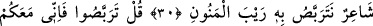
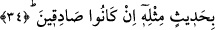

RESÛLÜM! SEN ÖĞÜT VER
29. (Resûlüm!) Sen öğüt ver. Rabbinin lütfuyla sen ne bir kâhinsin, ne de bir deli.
30. Yoksa onlar: (O,) bir şairdir; onun, zamanın felâketlerine uğramasını
bekliyoruz mu diyorlar?
31. De ki: Bekleyin. Ben de sizinle beraber bekleyenlerdenim.
32. Onlara akılları mı bunu emreder, yoksa onlar, azgın bir topluluk mudur?
33. Yahut «Onu kendisi uydurdu!» mu diyorlar? Hayır, onlar îman etmezler.
34. Eğer doğru iseler onun benzeri bir söz getirsinler.
“(Resûlüm!) Sen öğüt ver.” İbnu’ş-Şeyh bu âyetin sebeb-i nüzûlu ile ilgili olarak der
ki: Allah Teâlâ mahlukât içinde zât-ı celâlden korkup kendi ehli arasında dâhî korku için
de bulunan bir topluluk olduğunu beyân ederek Rasûlullah (s.a.)’ı de bu topluluğa
nasihat edici olarak memur kıldığını belirttiği bir sırada bu âyet nâzil olmuştur.
Kâşifî şöyle demiştir: Nakledildiğine göre Mekke sokaklarının köşelerini bölüşüp
burada oturan bir topluluk, Hz. Peygamber (s.a.) hakkında Arap kabilelerine onun
kehânet, cinler, sihir ve şiirle uğraştığını söylerlerdi. Peygamberimiz (s.a.) bu sebeple
üzülünce âyet indi ve: “sana indirilen ayât ve zikr-i hakimi müşriklere hatırlatmada
bulunduğun hâl üzere devam et. Onların söylediği kıymetsiz bâtıl ifâdelere de önem
verme” tesellisinde bulundu.
“Rabbinin nimeti sayesinde sen…” Âyetteki nimet kelimesi açık tâ ile yazılmıştır.
İbn Kesir, Ebû Amr, Kisâi ve Yakub kırâatlarına göre “hâ” üzere durulur. Yâni “senin
nübüvvetini tasdik etmesi ve zekânı ziyadeleştirmesi sûretiyle verdiği nimeti
sayesinde...”
Kâşifî der ki: Kendi Rabbinin nimetlerine. Yâni Allah’a hamdetmen ve O’nun
nimetlerine şükretmen sayesinde. Yahut sana bu şekilde nimet verildiği halde sen asla
kâhin olamazsın. Dolayısıyla bu cümle, kendisine kâhin denilen kişi için bir hâl-i
lâzimedir. Zira Rasûlullah (s.a.), bu halden asla ayrılmamıştır.
“Sen ne bir kâhinsin…” Sen, müşriklerin dediği gibi bir kâhin değilsin. Kâhin,
kendinden söz icâd edip bir vahiy olmaksızın yarın ne olacağı hakkında haber uyduran